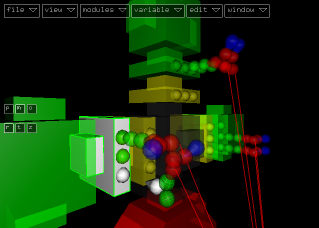
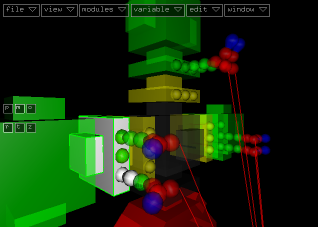
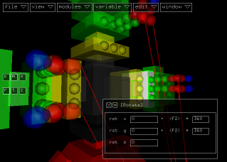
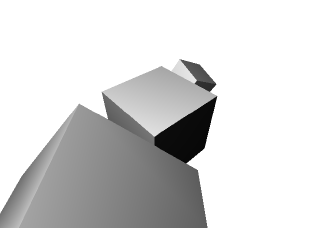

When copying the small matrix hierarchies in the previous chapter,
you also duplicated the modulator connections to the rotate module.
This results in a uniform rotation of all three cubes. You will learn
in this chapter, how to change this connections to achieve more individual
rotations for each cube.

Select the value out connector of an add module and disconnect
it from the rotate module (edit > module > disconnect).
Select the previously empty neighbor of the just disconnected value
in connector while holding SHIFT. Connect the two selected
value connectors.

Repeat this reconnection at another rotate module, but this time, exchange
a z- with a x-rotation instead of exchanging a y- and x-rotation.

Before switching to object mode and examining the result, let me explain
the preparatory steps of the last chapter:
We want the multiplicated cubes to rotate around their centers. Therefore,
we have to apply a translation before the rotation. That's why we had
to insert the translation module before copying the hierarchy.
Keep in mind, that the order of transformation is quite important.
Try to anticipate the result before copying whole hierarchy structures
in order to avoid a lot of reconnection work later.
But let's change to play mode now and have a look at what we got so
far:

Voila, just a few changes to the project but the rotations of the cubes
look much more interesting now.
Let's finish the background in the next
chapter.